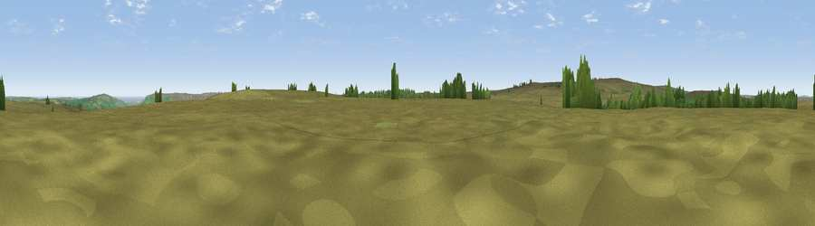

Viewpoint near Glaisdale
#17706 in England · top 40% of its area beats it · near GlaisdaleWhere it is
The exact computed spot (NZ 76475 01575). Click the marker for map links.
The view, rendered

A 360° render of this exact spot computed from the terrain model, tree cover and land cover — summer colours, afternoon light, calibrated against photographs of famous viewpoints. Real trees, hedges and buildings will differ in detail.
The panorama
Grey silhouette: terrain skyline in each direction (720 bearings, Earth curvature and refraction included). Dashed green: skyline with trees (+15 m) and buildings (+8 m) as obstacles. Blue strip: how far the ground is visible on each bearing.
Where the view opens
Wedge length = distance to the farthest visible ground on that bearing (vegetation-aware). Rings at 10, 25 and 50 km.
What fills the view
95% grassland · 2% woodland · 1% water ·
Angular shares of the visible panorama (visual magnitude), not map area. Landscape diversity 0.10 (0–1 Shannon).
Key numbers
More beautiful places nearby
The staircase of upgrades: each row has a higher view potential than everything closer. Driving times are estimates from straight-line distance, calibrated against real road routing — check an actual route before setting out.
| Place | Direction | Drive | Score |
|---|---|---|---|
| Viewpoint near Glaisdale | N · 1 km | ~4 min | 61.1 |
| Viewpoint near Rosedale Abbey | WSW · 3 km | ~8 min | 61.3 |
| Peat Hill | W · 4 km | ~9 min | 72.5 |
| Danby Beacon | NNW · 8 km | ~16 min | 73.4 |
| Viewpoint near Eskdaleside | ENE · 9 km | ~18 min | 78.4 |
| Viewpoint near Eskdaleside | ENE · 10 km | ~19 min | 80.7 |
| Viewpoint near Lythe | NNE · 15 km | ~27 min | 81.3 |
| Beacon Hill | N · 16 km | ~29 min | 82.3 |
54.40390, -0.82341 · source: screening · position refined by local search. Computed location — check access rights before visiting.